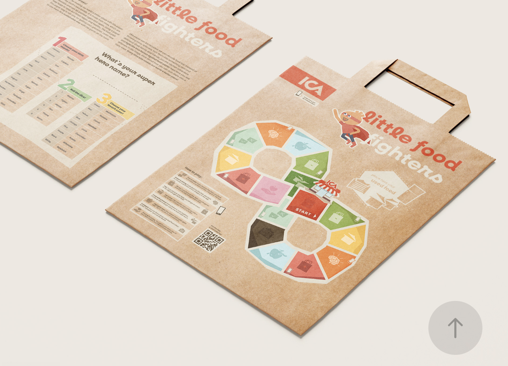
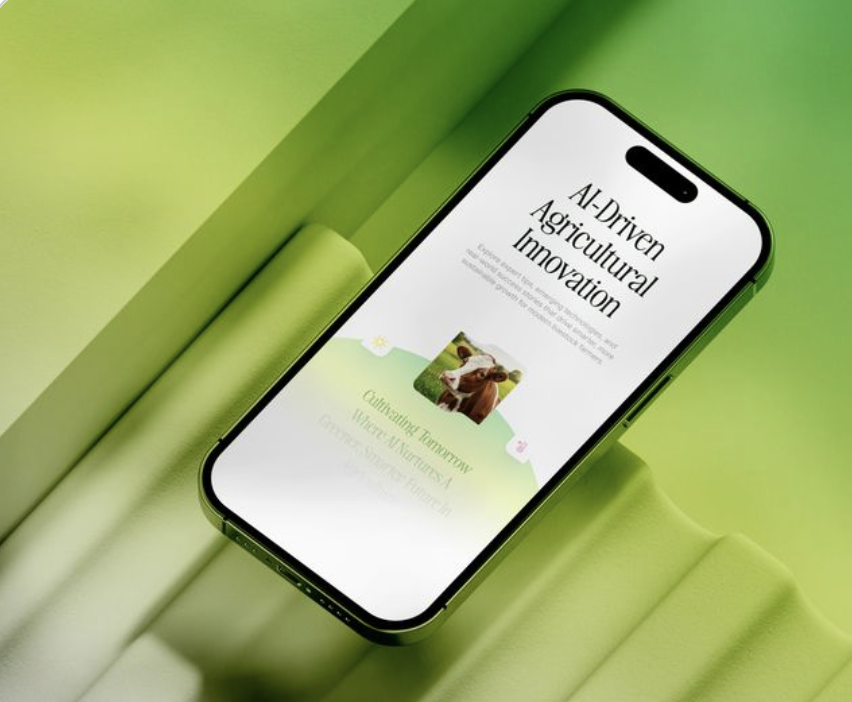

Concept exploration for a collaborative playlist app. Focused on the social layer — shared queues, reactions, and real-time listening.
Describe the problem, the context, and why it mattered. What were users experiencing? What was the business impact?
Discovery & Research
Describe your research approach — methods, participants, what you were looking for and what you found.
Define & Structure
How did you synthesise findings? What frameworks or models helped you define the problem and structure the solution space?
Design & Prototype
Describe the design decisions, the tools you used, and how you moved from concepts to high-fidelity screens.
Test & Iterate
How did you validate the design? What changed after testing, and why?
Describe what you designed and why it works. Focus on the key decisions and how they address the challenge.
Describe the outcome — qualitative or quantitative. What changed for users? What did the client or team observe?

Design System
Helix Component Library

Non-profit · Web
TerraWatch Climate Hub

E-commerce · Mobile
Bloom — Shopping Redesign